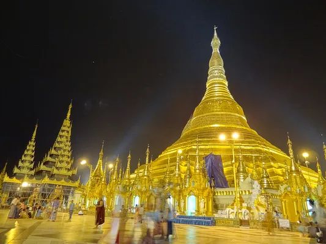
Shwedagon PagodaIt is the Shwedagon Pagoda, a famous pagoda in Myanmar. |
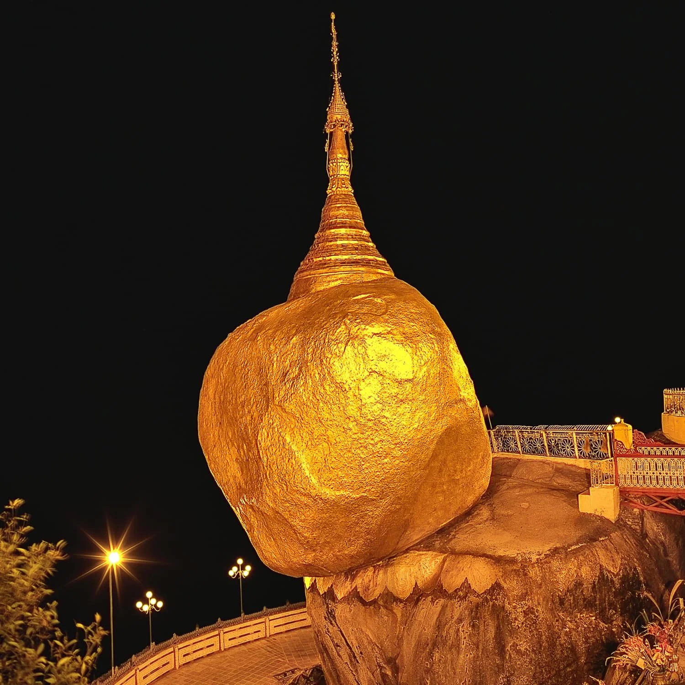
Kyaiktiyo PagodaIt is the Kyaiktiyo Pagoda, a famous pagoda in Myanmar. |
| In the year 103 of the Mahā Sakkarāja Era (588 BC), after attaining enlightenment as the Gotama Buddha, he journeyed through the Seven Places of Enlightenment-Attainment. During this time, two merchant brothers named Tapussa and Bhallika from the Ukkalāpajanapada offered him rice cakes and honey. The Buddha graciously gave them eight strands of his hair. The brothers carried these sacred relics back to Ukkalāpa. Upon their return,the King of Ukkalāpa, along with the townspeople, welcomed and revered these relics. The inhabitants of Ukalāpa, under the guidance of King Ukalāpa, enshrined the sacred relics of previous Buddhas at the Siṅguttara Hill. These relics included the staff of Kakusandha Buddha, the water filter of Koṇāgamana Buddha, the robe of Kassapa Buddha, and eight strands of hair from Gotama Buddha. They constructed and venerated the Shwedagon Pagoda, which stands at a height of 66 meters (216 feet) with dimensions of 44 meters by 20 meters. Due to the presence of the relics from these four Buddhas, the pagoda earned the title “Shwedagon Pagoda of the Four Sacred Relics. From approximately 600 BCE to the 14th century CE, 32 successive kings of Ukalapa maintained and enhanced the Shwedagon Pagoda. From 1372 CE onwards, it was further preserved and renovated by kings such as King Byinnya U, King Byinnya Yan, and King Byinnya Kyan Htaw. In 1453 CE, under the reign of Queen Shin Saw Pu, the height of the pagoda was increased to 302 feet. In 1774 CE, during the reign of King Hsinbyushin, it was raised to its current height of 326 feet (99. 36 meters). |
| The Kyaiktiyo Pagoda, today also known as the Golden Rock Pagoda is located on top of Mt. Kyaiktiyo at 3615 feet (1102 meters) above sea level, in the Mon State and approximately 130 miles (210 km) from the city of Yangon. The Pagoda was built more than 2500 years ago. Legend has it that the Pagoda was built on a Hair relic that was given to a hermit by Buddha Himself. The hermit treasured the sacred Hair in his hair knot until he found a boulder resembling his own head on which he could build a pagoda to enshrine it. In the Mon language “Kyaik” means “pagoda” and “Yo” means “to carry on the head” “Ithi” in Pali means “hermit”. Thus the name “Kyaiktiyo” derived from “Kyaik-Thi-Yo” , “ the pagoda carried on a hermit’s head”. It can also be qualified as one of the wonders of the world by virtue of the fact that it sits uniquely at the apex of a huge, almost egg shaped granitic boulder. This boulder (now completely gilded) is precariously perched on a projecting tabular rock. The gilded boulder and the rock table are two separate pieces, the boulder actually balancing off the extreme verge of the sloping surface of the rock and overhanging it by nearly half its length |
| Photo | Name | Spire height | Elevation |
|---|---|---|---|
| Shwedagon Pagoda | 99 m (325 ft) | 112 m (367 ft) | |
| Kyaiktiyo Pagoda | 15 m (49 ft) | 1,100 m (3,609 ft) |
| The Shwedagon Pagoda's legend states it was built over 2,500 years ago by merchants who received relics of the Buddha, but its earliest historical mention is in 1362/63 CE. It was then raised to its current height of 99 meters by successive rulers who also restored it after damages, with the most significant restoration in 1775. Yangon is the largest seaport city of Myanmar. It was previously the country’s capital until 2006 when the capital was moved to Naypyidaw, along with government offices. Yangon was then designated as the commercial capital. It is located at the convergence of North Latitude 16.46 and East Longitude 96.10. Yangon is situated at the confluence of the Yangon River which is called Hlaing River, Pazundaung Creek, and Bago River, about 21 miles inland from the sea. With tidal waters, large ocean-going vessels can access the port of Yangon. The city is well-connected by road, river, and air routes, making it a strategic hub for trade and commerce. The history of Yangon spans over 2600 years and is closely linked to the history of the Shwedagon Pagoda. Historically known as Ukkalāpa, the name changed to Dagon by the 11th century, as recorded in Mon chronicles. In 1755, during the reign of King Alaungpaya, the city was renamed Yangon. |
| 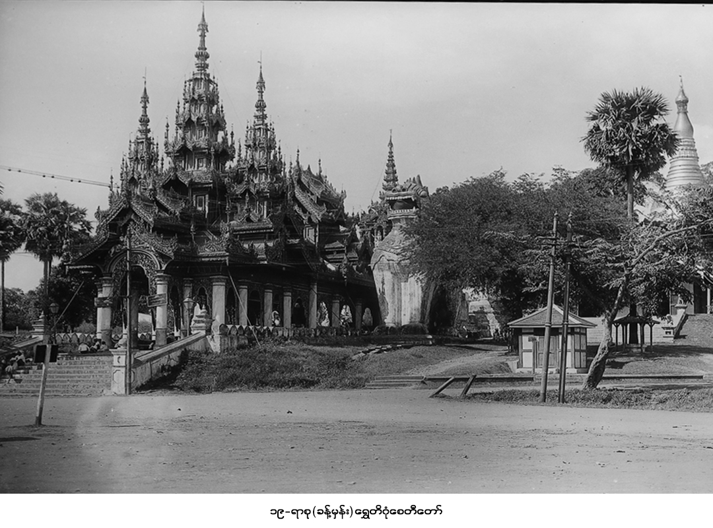 | 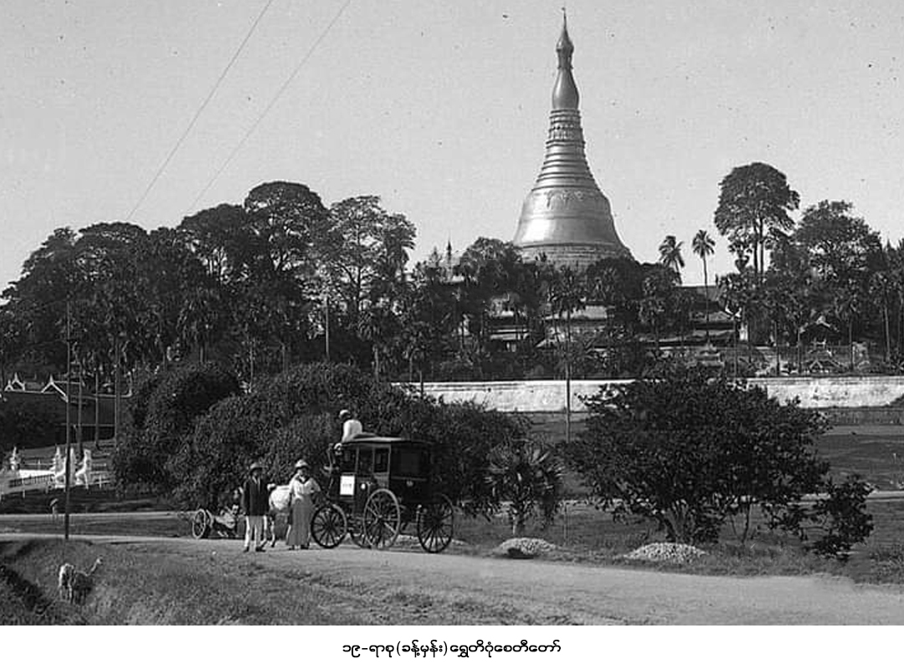 |
| The history of the Kyaiktiyo Pagoda, or Golden Rock, is rooted in a Buddhist legend from over 2,500 years ago, where a hermit gifted the King a strand of the Buddha's hair. The king then enshrined it in a small pagoda atop a massive, head-shaped boulder he found in the sea. This mythical event explains the rock's precarious balance, held by the Buddha's hair, making the site a significant pilgrimage destination and an ancient religious marvel. |
| 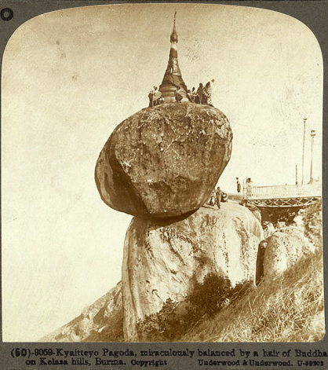 | 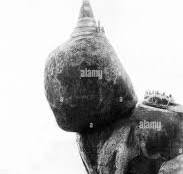 |
Before You Go |
|||
| To visit the Shwedagon Pagoda, which is the most sacred Buddhist pagoda in Myanmar located in Yangon, you should be aware of the entrance fee for foreigners, dress modestly (covering knees and shoulders), and remove your shoes before entering the complex. You can access the pagoda using the elevators at the Southern entrance, and the site is particularly beautiful in the evening when it is illuminated. While there, you can explore the complex and observe the rituals and daily lives of the locals, making it a highlight of any trip to Yangon. | |||
| 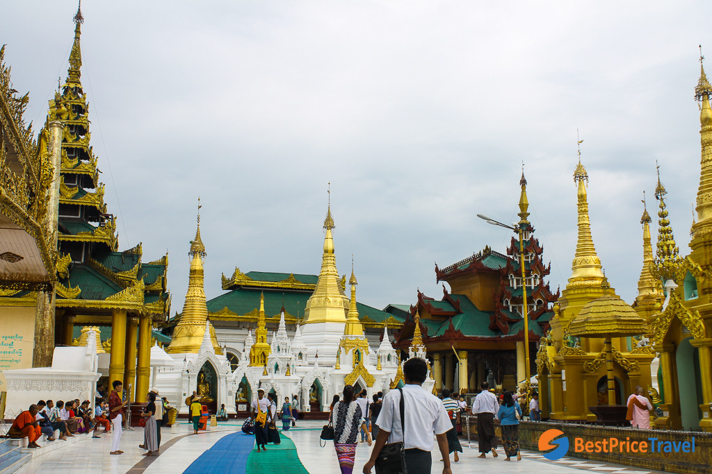 | 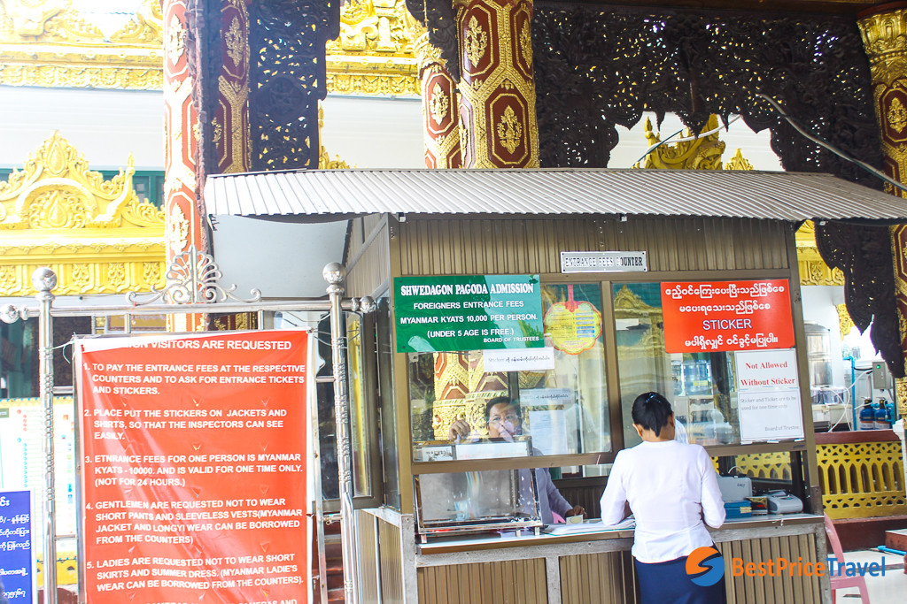 | 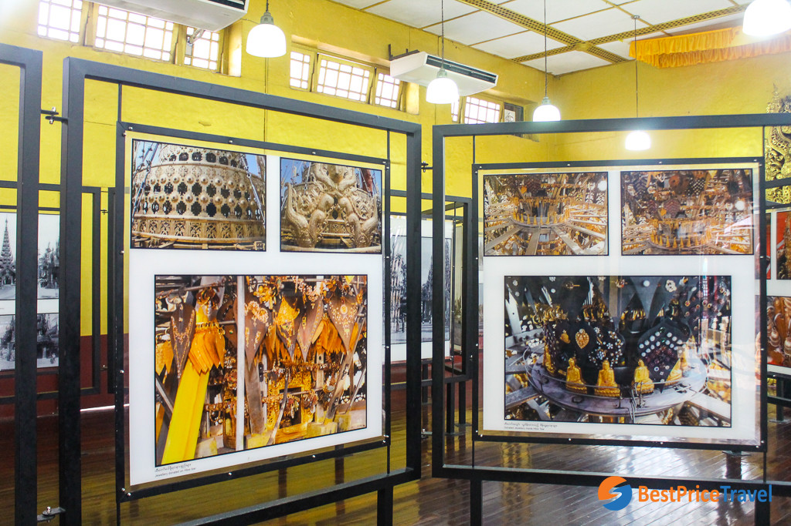 | |
Before You Go |
||||
| Ever since I saw a strange and somewhat obscure photo of this shimmering rock teetering off the side of a cliff I knew I had to visit. The mysterious land of Myanmar called me in with its untouched and mesmerising culture as soon as I learnt of its endless charms. The tourist trail, if you could call it that, of Myanmar is thread bare with visitors as it is, so stepping off the ever so worn track guarantees a rich, authentic and eye opening insight into a country who charmed us from the moment we stepped foot on to its dusty streets. Visiting The Myanmar Golden Rock Pagoda, one of the countries most holy shrines on the first day of the water festival, well that was one of those amazing and unforgettable travel experiences! | ||||
| 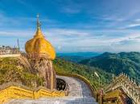 | 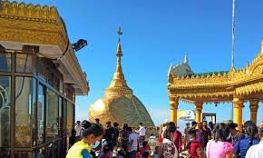 | 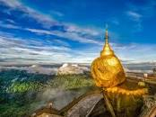 | 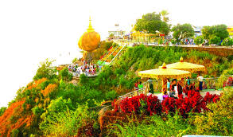 | 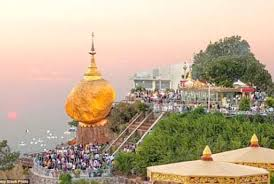 |
Contact InformationEmail: info@myanmartourismboard.org |
|---|
Contact InformationEmail: zawmoehtwe@gmail.com. |
|---|